SHORT GLIMPS OF MARVEL WORLD
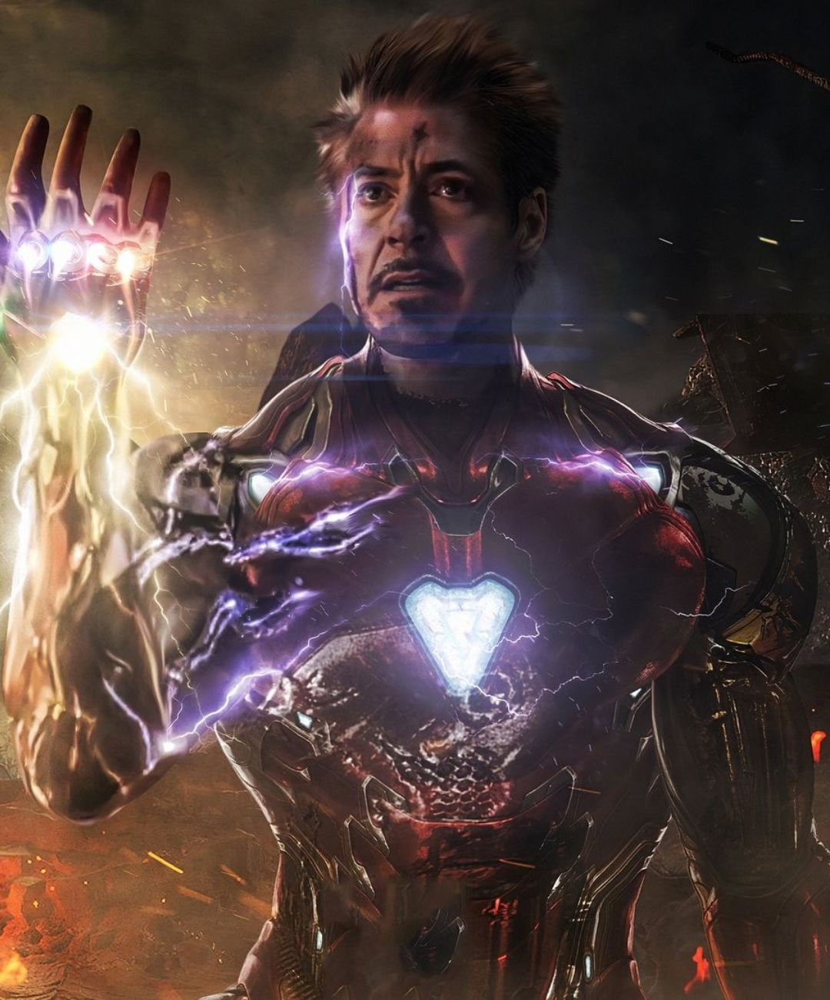
IRONMAN
Iron Man is a fictional superhero who wears a suit of armor. His alter ego is Tony Stark. He was created by Stan Lee, Jack Kirby and Larry Lieber for Marvel Comics in Tales of Suspense #39 in the year 1963 and appears in their comic books. He is also one of the main protagonists in the Marvel Cinematic Universe.
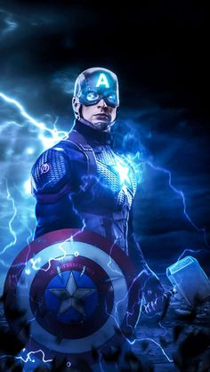
CAPTAIN AMERICA
Captain America is the alter ego of Steve Rogers, a frail young artist enhanced to the peak of human perfection by an experimental "super-soldier serum" after joining the military to aid the United States government's efforts in World War II.
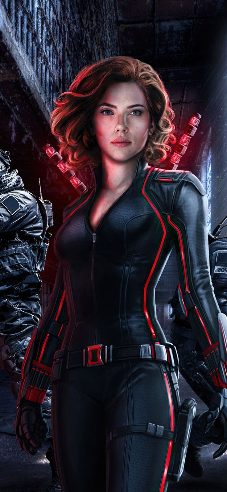
Black Widow
A trained spy and warrior
Romanoff was trained in the Red Room, a facility for training lethal sleeper agents for the Soviet Union. She was turned into a killing machine — an expert in weapons and almost all known martial arts, including savate, karate, judo and kung fu. She is also an acrobat and a gymnast.
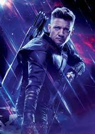
HawkEye
Known for his use of the bow and arrow as his primary weapon and an extremely keen eyesight and accuracy that earned him the codename Hawkeye, Barton had become one of the best S.H.I.E.L.D. agents, responsible for the recruitment of Black Widow, whom he developed a strong friendship with.
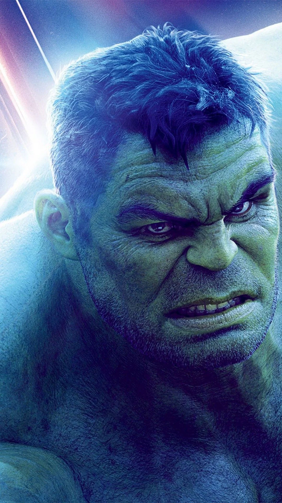
Hulk
The Hulk's strength remains at the top level of all super human beings on Earth and increases exponentially as his anger grows. This strength grants him not only upper body prowess, but also the ability to leap great distances and land without harm to himself.

THOR
The character is based on the Norse mythological god of the same name, the Asgardian god of thunder whose enchanted hammer Mjolnir enables him to fly and manipulate weather, among his other superhuman attributes. A founding member of the superhero team the Avengers, Thor has a host of supporting characters and enemies.
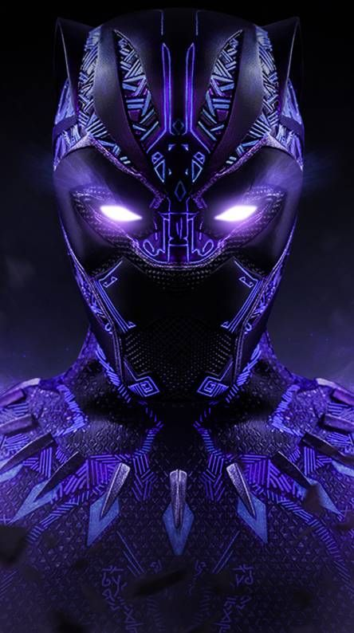
BLACK PANTHER
Black Panther Was the First Black Superhero Character in Mainstream Comics. Despite the appearances of other black characters before T'Challa, Black Panther was the first black character with superpowers to appear in comics. This was way before DC's Green Lantern and Black Lightning.
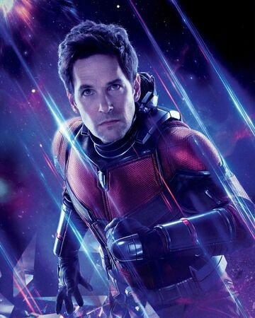
ANTMAN
He is a reformed thief and an electronics expert. He was a member of the Avengers, the Fantastic Four and the Guardians of the Galaxy, the main character in the comic-book series FF and, in 2015, he became the title character in the series Ant-Man.
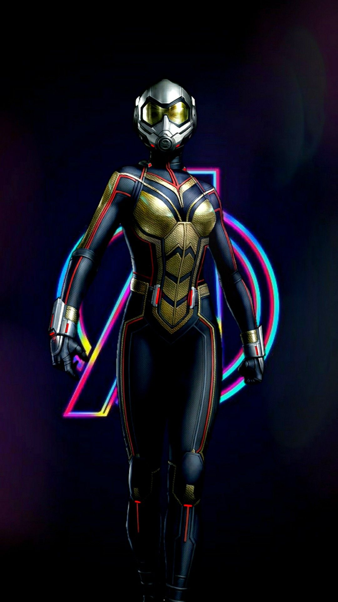
WASP
Janet Van Dyne, the founding Avenger known as Wasp, has enchanted Marvel fans since her first appearance in Tales to Astonish. With a flair for fashion and fighting, Wasp has evolved from fun-loving socialite, to bona fide hero. Discover Wasp's journey and greatest moments on, and off, the battlefield.
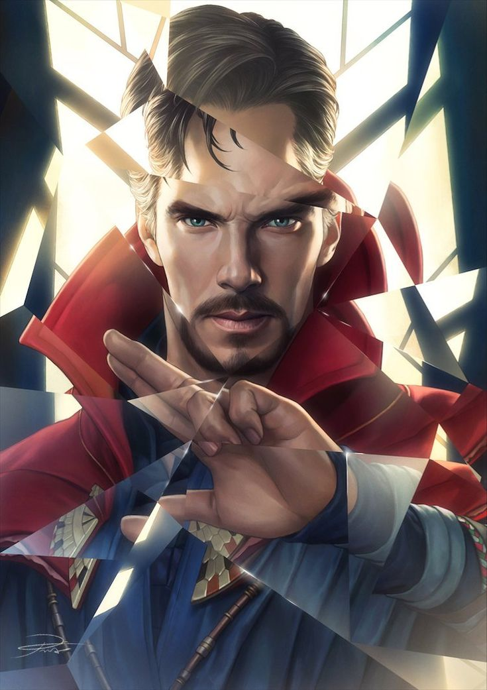
Dr.STRANGE
Strange was a skilled neurosurgeon before nerve damage impaired his hands. Doctor Strange is described as "the mightiest magician in the cosmos" and "more powerful by far than any of your fellow humanoids" by Eternity, the sentience of the Marvel Universe.

WINTER SOLDIER
One significant difference between the comics and movies being that Bucky was only sixteen years old when he went off to WWII alongside the Star Spangled Avenger. Similar to Batman's many Robins in DC comics, Bucky grew up and became somewhat of an anti-hero in his own right.
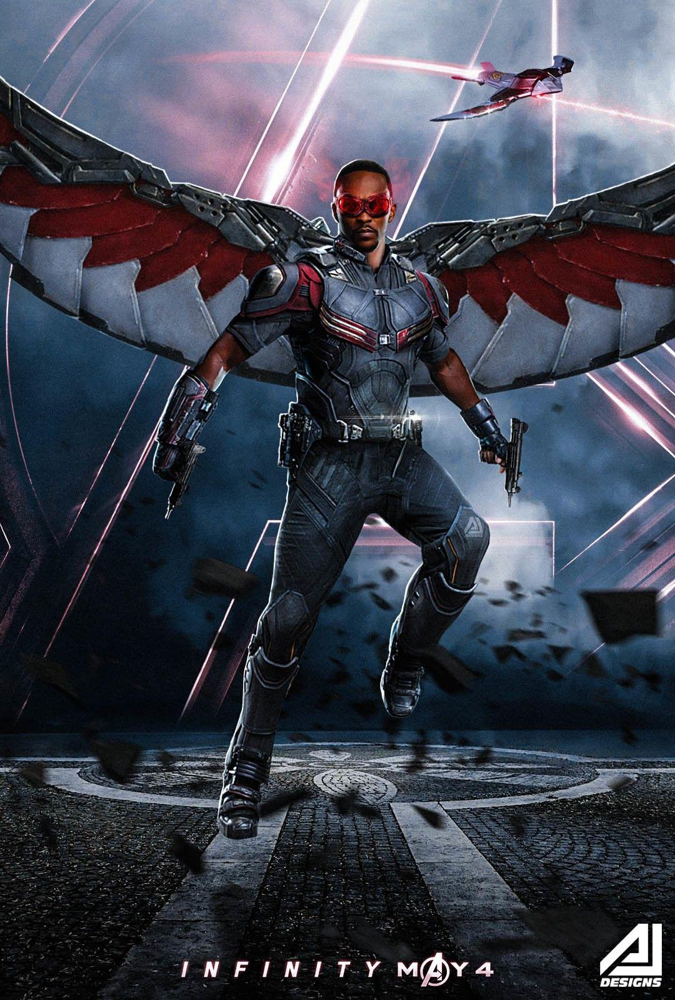
FALCON
Samuel Wilson, or known as his superhero alias Falcon, uses mechanical wings to fly, defend, and attack. He also has limited telepathic and empathic control over birds. After Steve Rogers retires, Wilson becomes Captain America in All-New Captain America #1 (Jan. 2015) and leader of the Avengers.

MAIRA HILL
Maria Hill is one of Nick Fury's best S.H.I.E.L.D. agents. Appearing for the first time in the Avengers, she has been seen as one of Fury's most capable agents, and one whom he trusts. Both a competent field agent and a right-hand woman of Fury, Hill has a key role in the fight against Loki.
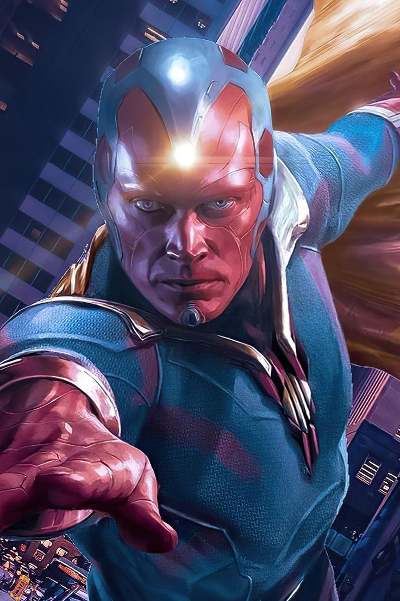
VISION
The android called Vision defies physics and fights as an Avenger with the power of density manipulation and his flawless computer brain. A fully unique being, Vision came about thanks to a combination of Wakandan Vibranium, Asgardian lightning, an Infinity Stone, and more.

SCARLET WITCH
The Scarlet Witch flourished as an Avenger, despite her domineering and over-protective brother. As she learned more about her powers and the role of a hero, Wanda found herself attracted to the android Vision and the two soon declared their love for each other, a situation Pietro found intolerable.